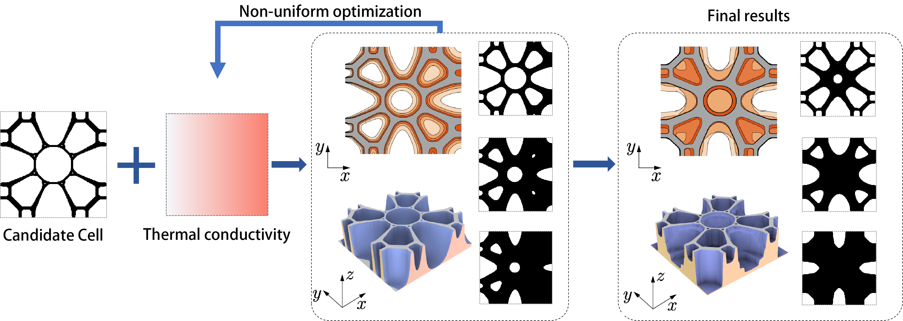
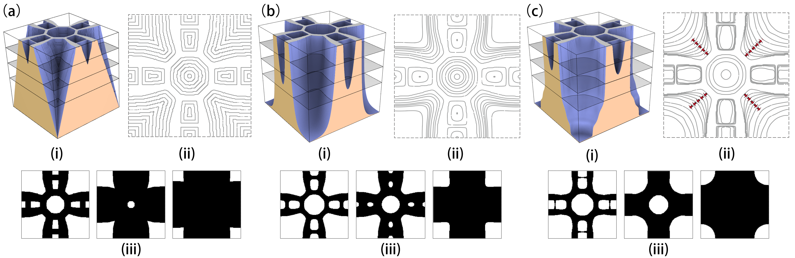
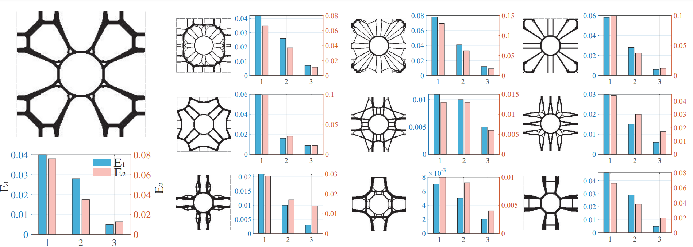

Topology Optimization of Differentiable Microstructures
Computer Methods in Applied Mechanics and Engineering, 2023
Xiaoya Zhai, Weiming Wang, Falai Chen, Jun Wu*.
A reviewer comment "The manuscript presents a compelling and innovative approach by treating the boundary expansion as a heat conduction problem. This idea stands out as unique and does not seem to have been previously published or explored by other researcher".
|

|
Figure 1: the pipeline of differentiable microstructures generation.
Key words: Topology optimization; Functionally graded microstructures; Inverse homogenization
Abstract
Recent years have seen a growing interest in topology optimization of functionally graded microstructures, characterized by an array of microstructures with varying volume fractions. However, microstructures optimized at slightly different volume fractions do not necessarily connect well when placed adjacently. Furthermore, optimization is commonly performed on a finite set of volume fractions, limiting the number of microstructure configurations.
In this project, we introduce the concept of differentiable microstructures, which are parameterized microstructures that exhibit continuous variations in both geometry and mechanical properties. To construct such microstructures, we propose a novel formulation for topology optimization. In this approach, a series of microstructures is represented using a height field, and the objective is to maximize the bulk modulus of the entire series. Through this optimization process, an initial microstructure with a small volume fraction undergoes non-uniform transformations, generating a series of microstructures with progressively increasing volume fractions. Notably, when compared to traditional uniform morphing methods, our proposed optimization approach yields a series of microstructures with bulk moduli that closely approach the theoretical limit.
Differentiable Microstructures
|
Differentiable microstructures are graded microstructures that are described by continuous parameters, and wherein both physical properties and the geometry are continuous and differentiable with respect to predefined parameters. The physical differentiability is the same as the concept of numerical differentiability. The physical properties can be evaluated, for example, by numerical homogenization. To define geometric differentiability, a metric is needed for quantifying the geometric difference between adjacent microstructure density distribution. This is beneficial to allow for varying topologies in functionally graded microstructures. While often a small modification in geometry leads to a small change in physical properties, the change in physical properties is not guaranteed to be small. If the topology differs from adjacent density distribution, the physical properties may differ unproportionally. Thus, both geometric and physical differentiabilities are needed to define differentiable microstructures. MethodsIn our approach and in multi-scale optimization, the interest is to get an optimal series. Here we use a novel approach by treating the boundary expansion as a heat conduction problem. The continuous morphing ensures geometric differentiability, while the non-uniform characteristic provides an opportunity to maximize the physical property for the entire sequence during morphing. Different from the traditional topology optimization, we take the thermal conductivity as the variable and the physical properties of the sequence microstructure as the objective function, in addition to applying the equilibrium equation and mentioning the constraints. Additional heat conduction constraints are also added to the model.
Figure 2: Different sequence results for different thermal coefficients. |
Results
Two alternative methods (uniform offset vs. uniform thermal conduction) are compared with the optimized microstructures. The results are visually compared in Figure 3, using the height field as well as iso-contours. The slope of the height field is inversely proportional to the space between adjacent iso-contours. This large variation is achieved with non-uniform thermal diffusivities. Three instances of the microstructures in each series are shown at the bottom.
|

|
Figure 3: Comparison of 2D differentiable microstructures (iii) obtained by (a) uniform dilation, (b) uniform thermal diffusivity, and (c) optimized thermal diffusivity. The differentiable microstructures are visualized by height fields (i) and iso-contours (ii).
To quantitatively measure the deviation from the theoretical limit, we define two metrics to evaluate the quality of the optimized microstructures. E1 measures the average of the difference between the bulk modulus of the optimized microstructure and the theoretical limit at different volume fractions. E2 measures the maximum of the differences.
|

|
Figure 4: The bar graph of the evaluation factor E1 (blue bar) and E2 (pink bar) of three approaches under ten cases. The histograms from left to right are shown uniform dilation operation (1), uniform thermal diffusivity operation (2), and optimized thermal diffusivity operation (3), respectively.